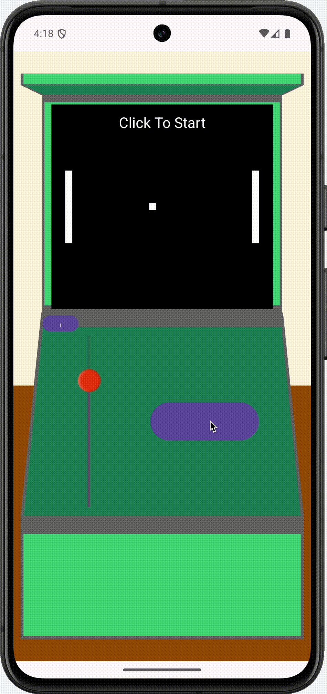
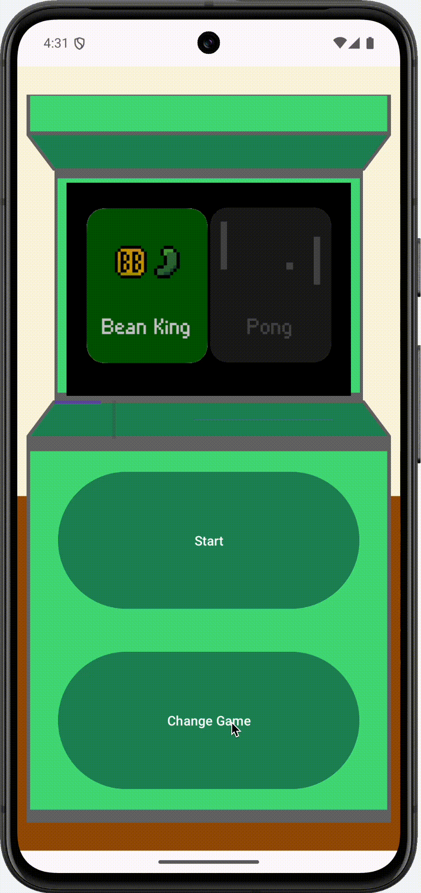

I created a platform for building games, and running them within a single app. Games built for the platform adhere to the custom control-scheme of button and slider. This controll scheme was chosen to address common limitations with games on mobile:
- Game content covered by fingers
- Games forcing users to hold devices horizontally - Decreasingly popular
- Buttons can be too small or too close together, leading to accidental presses.
Games built for the platform extend a controller class, allowing the operating system controller to control the game.
The Pong game below demonsrates the use of the button and slider
The platform can run multiple games, and cartridges can be swapped from the home menu.
